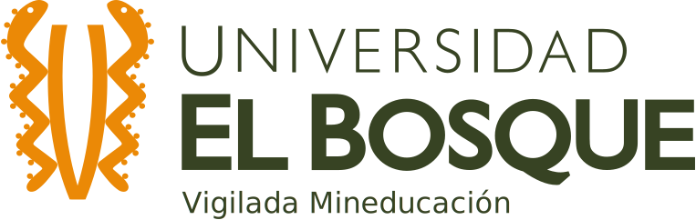
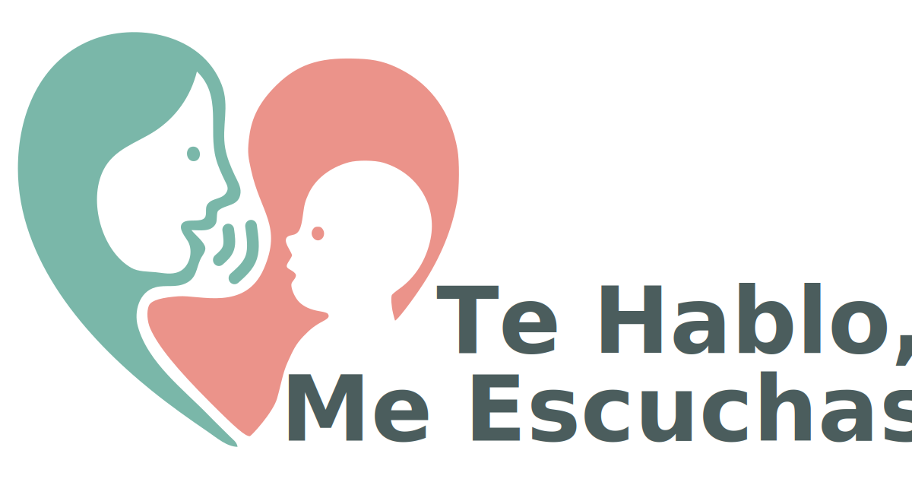
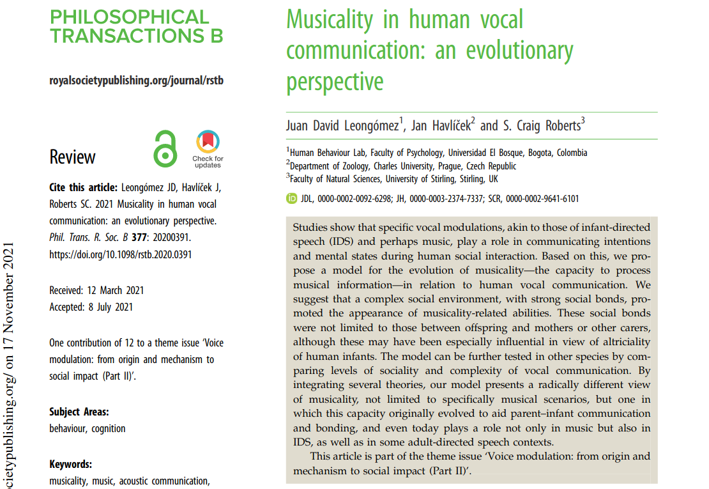
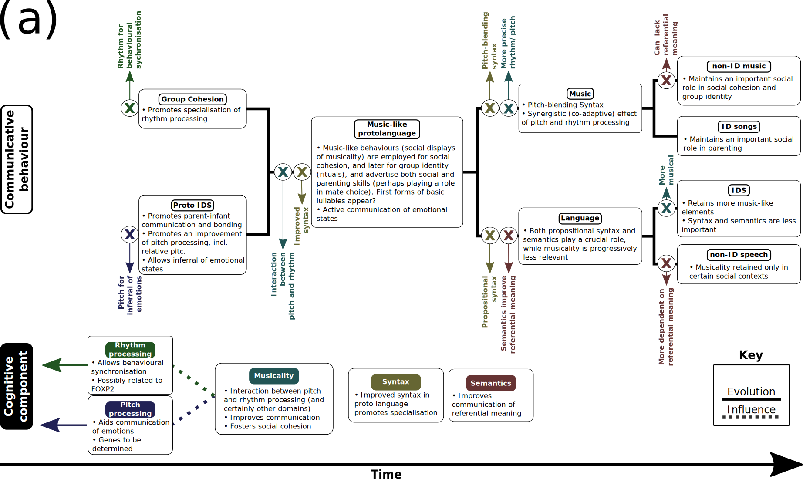
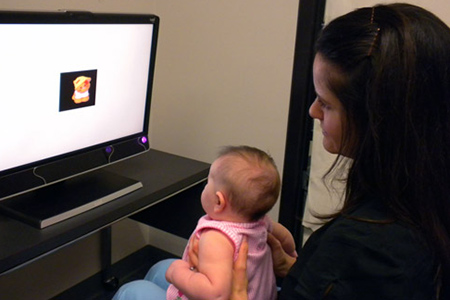
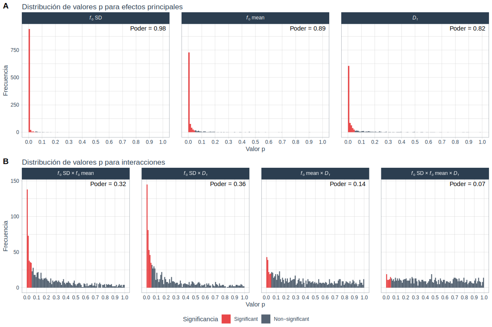
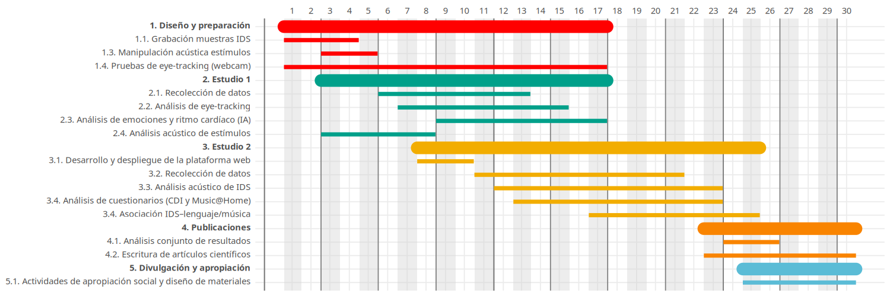

| Nombre | Grupo UEB | Afiliación | Experticia |
|---|---|---|---|
| Juan David Leongómez | CODEC |  | Análisis de comportamiento |
| Milena Vásquez-Amézquita | CODEC | Neurociencia | |
| Nicolás Ignacio Ramos Rodríguez | Investigaciones Pediátricas Bosque | Pediatría | |
| María Catalina Bages Mesa | Investigaciones Pediátricas Bosque | Pediatría | |
| Daniel Toro Avila | Independiente | Independiente | Pediatría |
| Adriana Cristancho Arévalo | Independiente | Independiente | Pediatría |
| Ruth Stella Chacon Pinilla | Educación e Investigación UNBOSQUE | Educación | |
| Lina M. Rodríguez Granada | Psic. de la Salud/Deporte/Clínica | Psicología de la música | |
| Luz H. Buitrago León | Psic. de la Salud/Deporte/Clínica | Psicología del desarrollo | |
| Natalia Moreno-Buitrago | Externo | Desarrollo musical | |
| David A. Puts | Externo | Evolución comportamental |
Funciones evolutivas del habla dirigida a bebés
Impacto en la atención, las preferencias auditivas y el desarrollo lingüístico y musical temprano

Juan David Leongómez, Milena Vásquez-Amézquita, Nicolás Ignacio Ramos Rodríguez, María Catalina Bages Mesa, Daniel Toro Avila, Adriana María Cristancho Arévalo, Ruth Stella Chacon Pinilla, Lina Maria Rodríguez Granada, Luz Helena Buitrago León, Natalia Moreno-Buitrago, David A. Puts
Convocatoria Interna - Investigación Avanzada · 2025
Habla dirigida a bebés (IDS)
¿Qué nos dice una voz?
¿Qué nos dice una voz?
- Antes de hablar, de caminar o entender palabras, las y los bebés ya escuchan.
- Nacemos preparados para conectarnos con quienes nos cuidan.
- Esa conexión ocurre, en gran parte, a través de una voz especial: el habla dirigida a bebés (IDS).
¿Qué nos dice una voz?
El IDS no solo es “ternura”. Es una herramienta poderosa de comunicación emocional, social y cognitiva.
¿Por qué importa el IDS?
¿Por qué importa el IDS?
- SUPERVIVENCIA: Mejora el apego y la regulación emocional.
- DESARROLLO: Capta la atención del bebé y facilita el aprendizaje del lenguaje.
- NECESARIO: Parece ser universal, está presente en todas las culturas y tiene características consistentes.
- EVOLUCIÓN: Tiene propiedades similares al canto, y puede estar en la raíz evolutiva de la música y el lenguaje.
¿Por qué importa el IDS?
- Las capacidades de los bebés para seguir la mirada y atender a la boca del interlocutor predicen el crecimiento del vocabulario.
Brooks & Meltzoff, 2008; Çetinçelik et al, 2021; Fernald et al, 2008; Tenenbaum et al, 2015
¿Por qué importa el IDS?
Puede estar en la base de la evolución de la musicalidad y el lenguage.
¿Por qué importa el IDS?
¿Por qué importa el IDS?
¿Por qué importa el IDS?
- En humanos, el cuidado aloparental implica que las señales de musicalidad de otros cuidadores potenciales pueden indicar confianza y capacidad para cuidar y vincularse con el bebé.
- Una característica central del IDS es su alta variabilidad tonal, por lo que los bebés deberían preferir muestras con variabilidad aumentada frente a las no manipuladas.
Este proyecto
Este proyecto
2 estudios
- Estudio 1: Efectos de la manipulación acústica del IDS en la atención de bebés en etapa prelingüística
- Estudio 2: Efectos del IDS en habilidades lingüísticas y musicales posteriores
Diseño estudio 1
- Estudio 1: Efectos de la manipulación acústica del IDS en la atención de bebés en etapa prelingüística

- 160 bebés de 3–9 meses.
- Evaluación en laboratorio con eye-tracking, análisis de emociones y ritmo cardíaco.
Diseño estudio 1
- Estudio 1: Efectos de la manipulación acústica del IDS en la atención de bebés en etapa prelingüística
- 160 bebés de 3–9 meses.

Diseño estudio 1
- Estudio 1: Efectos de la manipulación acústica del IDS en la atención de bebés en etapa prelingüística
- 160 bebés de 3–9 meses.
- Diseño factorial 2x2x2 (8 condiciones acústicas).
- Medidas:
- Eye-tracking (fijaciones visuales)
- Expresiones emocionales (machine learning)
- Ritmo cardíaco estimado (machine learning)
Diseño estudio 1
- Estudio 1: Efectos de la manipulación acústica del IDS en la atención de bebés en etapa prelingüística
- 160 bebés de 3–9 meses.
- Sistema de rastreo ocular infrarrojo de alta precisión.
- Validación paralela de sistema cámara web convencional (desarrollo tecnológico).
- Exploramos tecnología accesible, abierta y escalable.
Diseño estudio 1
- Estudio 1: Efectos de la manipulación acústica del IDS en la atención de bebés en etapa prelingüística
- 160 bebés de 3–9 meses.
Inteligencia artificial
- Análisis automático de expresiones faciales y emociones.
- Estimación del ritmo cardíaco a partir de video (rPPG).
- Todo usando herramientas de código abierto.
Diseño estudio 2
- Estudio 2: Efectos del IDS en habilidades lingüísticas y musicales posteriores

- 480 madres de bebés de 16–23 meses.
- Evaluación en línea.
Diseño estudio 2
Estudio 2: Efectos del IDS en habilidades lingüísticas y musicales posteriores
480 madres de bebés de 16–23 meses.
Diseño estudio 2
- Estudio 2: Efectos del IDS en habilidades lingüísticas y musicales posteriores
- 480 madres de bebés de 16–23 meses.
Datos recolectados:
- Videos del IDS materno durante el primer año.
- Cuestionarios: CDI y Music@Home.
Diseño estudio 2
- Estudio 2: Efectos del IDS en habilidades lingüísticas y musicales posteriores
- Videos del IDS materno durante el primer año.
Ética
Ética
- Estudio 1 ya obtuvo aprobación ética (código CIE 2023-059). Sólo cambia n.
- Estudio 2 sin riesgo.
Ética
- Estudio 2 sin riesgo.
https://tableconvert.com/es/markdown-generator
Equipo
Equipo
Cronograma
Impacto esperado
- Contribuye a la ciencia del desarrollo, lenguaje y musicalidad.
- Aporta evidencia útil para salud materno-infantil y educación inicial.
- Modelo replicable y abierto, adaptable a diversos contextos.
¡Gracias por escuchar!
Juan David Leongómez PhD, MSc
jleongomez@unbosque.edu.co